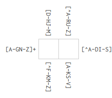

These may not seem like much, but JDK code inlining fixes my one major niggle
with native-image: it was too hard to get top-notch single-binary TLS, and
now it just works.
(There are lots of other great things that happened in this release! They're
just not in parts of Graal I use.)
Updating to JDK 11
Updating to JDK 11 is optional, but you might as well get it over with now.
A brief summary of Jigsaw (JDK9+) breakage
There are two things that bit Clojure-using early adopters of JDK 9, both
consequences of Project Jigsaw:
The module system hiding previously-available classes
Changes to the way classloaders work
These two changes broke Clojure and a whole host of common libraries (mostly
because of the now-unavailable classes) and the two common build tools
(leiningen and boot, mostly because of the bootclassloader). These were quickly
resolved and only affect you now if you care about supporting a long range of
Clojure versions or a long range of JDKs. Since this blog post is about
native-image, your output is a standalone binary and you get to pick the JDK
version. However, you still need to know a bit about this background in order to
understand some of the workarounds necessary for supporting GraalVM native-image
targeting JDK11 and above. This is happening now because Graal was previously
targeting JDK8, avoiding all of these issues.
The two classes that tend to come up that were often used but hidden in modules
are java.sql.Timestamp and javax.xml.bind.DatatypeConverter. Despite their
package names, they don't have anything to do with SQL or XML. Clojure used them
because Timestamp was the good instant type (java.util.Date being famously
bad), and DatatypeConverter was the good Base64 implementation available
everywhere.
Example: DatatypeConverter in clj-http-lite
Outside of Clojure, clj-http and clj-http-lite used DatatypeConverter as well
(also for base64). clj-http-lite is very popular in native-image Clojure
projects. Like other libraries, they were quickly patched to support JDK9. The
patch still attempted to import DatatypeConverter (see the actual patch in
clj-http-lite), because the Base64 implementation
replacing it isn't available on every JDK those libraries wanted to support.
Normally, this is fine: the import fails and the alternative library gets used.
However, the static analysis step in GraalVM sees the trial import and
complains:
The classic workaround was to add the module back with --add-modules
java.xml.bind. Since it's just a trial import (see patch), you can instead use
the workaround suggested in the error message (--allow-incomplete-classpath)
and it'll work fine. The downside is this moves all errors to runtime. There's
a Graal ticket for a more precise command line
argument limiting the suppressed error to that class. I'm confident there's
already a way to express this in Graal command line arguments, but I haven't
tried to figure out the right incantation yet.
Single binary TLS!
Once you fix the above issue with clj-http-lite, as long as you enable the TLS
subsystem (--enable-https), you'll just get single-binary HTTPS with
libsunec.so under the hood, meaning I can finally close
#1336.
Example project
I updated cljurl-graalvm-demo if you want to try any of
this at home. If you're on Linux and want to debug the TLS issues, I wrote
nscap specifically for this purpose. It leverages Linux namespaces to
elegantly capture network traffic for a single process. You can then throw the
resulting PCAP into e.g. wireshark.
What I'd still love to see in native-image
The compiler is slow. It's in the range of rustc speed: typically faster than
C++, certainly slower than Go. It eats a lot of RAM. It's fine because I don't
iterate on the binary version. I develop Clojure apps targeting native-image as
if they're normal Clojure apps and then eventually run some end-to-end tests on
the binary. But you knocked out my #1 feature so now I have a new one 😊
Corrections
I previously thought/posted that the locking macro (CLJ-1472)
problems appear to be gone or at least reduced, but I have been unable to
consistently reproduce that and others have reported no change.
Regex Crossword is a puzzle game to help you
practice regular expressions. I wrote a program to solve them. You can find it
on GitHub as lvh/regex-crossword. If
you're on amd64 Linux, you can try the demo binary too. This blog post
walks you through how I wrote it using logic programming.
To me this game feels more like Sudoku than a crossword. When you solve a
crossword, you start by filling out the words you're certain of and use those
answers as hints for the rest. Backtracking is relatively rare. In a sudoku, you
might start by filling out a handful of certain boxes, but in most puzzles you
quickly need to backtrack. That distinction shapes how I think of solving it:
searching and backtracking is a natural fit for logic programming.
Logic programming is a niche technology, but in its sweet spot it's miraculous.
I'll introduce the concept to help you recognize what sorts of problems it's
good at. Worst case, you'll enjoy a cool hack. Best case you'll get the
satisfaction of writing a beautiful solution to a problem some time in the
future.
My programming language of choice is Clojure, and Clojure has
clojure/core.logic, a logic programming library. Because logic
programming is such a specialized tool, it's more useful to have libraries that
let you "drop in to" logic programming than to do everything in a full-blown
logic programming language.
Approach
It would not be a bad idea to read the instructions for Regex
Crossword. I'll also assume you have seen some basic regular
expressions. Hopefully the Clojure will be piecemeal enough you can
just follow along, but reading a tutorial wouldn't hurt.
Each regex part applies to some number of unknowns (empty boxes). The first row
regex HE|LL|O+ applies to the unknowns of the first row. The first column
regex [^SPEAK]+ applies to the unknowns of the first column. Both constrain
the top left unknown: we're counting on our logic programming engine at being
convenient for expressing that "cascading" of constraints.
An unknown is just a logic variable in constraint logic programming. For brevity
we'll call them "lvars" ([ell vars]).
Rows, columns (and in later puzzles hexagon lines) are all just layout.
Fundamentally it's all just a regex applying to some lvars.
Breaking down regular expressions
Most regular expressions have structure, like (AB|CD)XY. We'll solve this
problem recursively: if (AB|CD)XY matches lvars p, q, r, s, then presumably
pq must match AB|CD and rs must match XY.
(There are some counterexamples to the idea that we can solve the entire problem
recursively! For example, backrefs within a regex would require a second pass,
and backrefs across regular expressions would require another top-level pass.
We'll deal with those later. There are ties to language theory here, but that's
a story for another day.)
We'll parse the regular expression into a data structure that's easier to
handle. Fortunately, there's a piece of code out there that knows how to
generate strings matching a given regex, which has a parser we can reuse. That
parser is designed for Java's regular expression syntax. It's not quite
identical to that of JavaScript, but we're hoping that the puzzles avoid those
tricky edge cases for now.
To parse, we use [com.gfredericks.test.chuck.regexes :as cre].
Progress! It is indeed an alternation (a or b) of a concatenation of H and E, or
L and L, or the letter O one or more times.
Logic machinery
The logic programming engine is going to search a tree of possibilities for
solutions that fit your constraints. Logic programming is inherently
declarative: instead of telling the computer how to find the answer, we describe
what the answer looks like.
An lvar that doesn't have a value assigned to it yet (it could still be
anything) is called "fresh". An lvar with a definite value is called "bound".
There is nothing preventing your program from returning fresh variables: that
just means the answer that doesn't rely on what that lvar taking any particular
value (like the x in 0x = 0).
In core.logic, a program consists of a series of expressions called goals.
(l/== a b) is a goal to make the values of a and b equal. It does not, by
itself, compare a to b or assign anything to anything. It just expresses the
idea of comparing the two. Logic programming calls this "unification".
As the engine searches the space of possible answers, sometimes a will be
equal to b already, or a will be bound and b will be fresh in which case
b will become bound to whatever a was bound to. Either way, the two
variables can be unified and the goal is said to succeed. But in many parts
of the tree this doesn't work out: a and b will already be bound to
incompatible values. In that case, the goal is said to fail. Unification is just
one of many goals, but it's the most important one in most programs including
ours.
Finally, we need a way to actually run the logic programming engine. that's
clojure.core.logic/run's job. Something like:
(l/run1[q];; run to find up to one answer with logic vars [q](l/==q'fred);; where q is unified with 'fred
... will return ('fred) (the 1-list with the symbol 'fred in it) because
there's only one answer for q that makes all the goals (here just one goal)
succeed. run takes the maximum number of answers as a parameter. Since
you're describing what the answer looks like, there might be zero, one, or any
other number of answers. Sometimes the engine will be able to prove there are no
other options (because the search was exhaustive) and it'll return fewer. Some
programs run forever, some so long it might as well be forever. run has a
sibling run* that gets you all the answers. It returns the same result,
because there's only one value for q that makes all goals succeed.
Character match
The simplest possible regular expression is just a character, which matches
itself: A. In our parse tree, this is an entry of :type:character. We'll
write a multimethod dispatching on :type to make this work so we can implement
other types later.
(defmulti re->goal:type)
A character looks like this: {:type :character, :character \L}. We'll use
destructuring to extract the :character key. In general, this multimethod will
take multiple lvars, though incidentally in the case of :character it'll
be just one, so we can destructure it as well.
Note the parser will always create concatenations as elements of alternations
even if the element is really just a single character. We can't handle
concatenations yet, so while we generally prefer things that the parser actually
produces, we'll cheat with an alternation of characters first.
... but as we saw above, that introduces concatenations. Instead:
(t/is(= '(\A\B)(l/run*[q];; "A|B" with the internal concatenations removed(rcl/re->goal{:type:alternation:elements[{:type:character:character\A}{:type:character:character\B}]}[q]))))(t/is(= '(\A\B\C)(l/run*[q];; "A|B|C" with the internal concatenations removed(rcl/re->goal{:type:alternation:elements[{:type:character:character\A}{:type:character:character\B}{:type:character:character\C}]}[q]))))
We need a way to express disjunction. Like l/and*, there's a l/or*. Once we
have that, alternation is straightforward:
This primer is a little unorthodox because we're walking through a problem that
requires rule generation. Most introductory texts make you build up static
rules. Disjunction is usually expressed with the macro l/conde. One difference
is that conde can express a disjunction of conjunctions in one go:
(conde[ab][c]);; is equivalent to(or*[(and*ab)c])
Concatenation
We want to be able to solve squares, not just individual letters. The simplest
case is a concatenation of two characters, like AA.
(l/and*is a function that returns a goal that succeeds when all its goals
succeed. We'd use the macro version l/all if we were explicitly writing out
our goals. Because we're generating them, it's easier to use a function.)
We're clearly abusing the fact that we happen to know that the parts are
characters and therefore length 1. But the parts could be repetitions, or an
alternation between concatenations each of length >1.
Distributing lvars over groups
Next, we need to find the ways lvars can be distributed over the individual
elements. We know that each lvar represents a square and each square must be
assigned, so we know that the sum of the lengths of the elements must be the
total number of lvars.
We can actually solve this sub-problem using logic programming as well! We'll
use CLP(FD), which means "constraint logic programming over finite domains".
As mentioned before, the approach we've taken to this problem is unique because
we're generating rules. Most logic programs have a static structure and
dynamic data, while our data informs the structure itself. We need to know how
many groups there are to know how many lvars to create with fresh. f/eq is
itself a convenience macro that rewrites "normal" Lisp-style equations (like (=
10 (+ x y z))) to a form the logic engine knows how to solve directly.
One way to solve that problem is with macros and eval, but that might impede our
ability to port to e.g. ClojureScript and native-image. Plus, I wanted to learn
more about how the finite domain magic works internally.
The main thing f/eq does here is introduce intermediate variables. The
underlying goal f/+ only takes 3 arguments: two summands and a sum result. To
express a sum over many summands you need intermediate "running total" lvars. I
wrote that:
This lets us define a sum goal and a helper function that runs the logic engine
for us to find all the ways we can sum up to a number, with some bounds:
(def sumo(partial reduceof/+))(defn summands"Find ways you can add some numbers up to a given total. For each number (summand) provide bounds `[min max]` or `nil` if you don't know. Possible assignments are returned in the same order."[totalbounds](let [lvars(repeatedly(count bounds)l/lvar)bounds-goals(map(fn [v[min max]](f/inv(f/interval(or min 0)(or max total))))lvarsbounds)](l/run*[q](l/==qlvars)(l/and*bounds-goals)(sumototallvars))))
Finally we need a way to use these weights to partition up a collection:
There's an alternative way to write this using appendo: (l/appendo a b c) is
like append but for lvars. You can create a version that supports multiple
lists (let's call it concato) using the same machinery:
(def concato(partial reduceol/appendo))
In a sense concato is more direct: the lists are the lists you want, there's
no partition-by-weights to translate from your numeric answer to the list
partitions you need. With all of these goals in place we can implement
concatenation. We find each possible weight distribution, and for each
distribution, each group must match that set of lvars.
What the concatenation problem tells us is that character is broken, too.
Concatenation may attempt to assign 2 lvars to a single character. Right now,
that returns a goal unifying the first lvar with that character: if there were
more, the remaining lvars would simply go unconstrained:
We communicate a problem with a failing goal. If some goal fails, the engine
will stop exploring that branch. The always-failing goal l/fail is designed
for this sort of thing. (You can probably guess what its counterpart l/succeed
does.) The amended version looks like this:
You could also do this in logic programming so that it's checked at runtime, but
since we're generating our goals ahead of time here and only giving them to the
engine at the end, we can short-circuit here.
Repetition
Sample repetition parses
Let's see what the parser does for a few simple repetitions:
"No bound" is represented by nil. Some numbers are represented as just 1,
others as 1N. The latter are clojure.lang.BigInts, not longs. The parser
does this so it can support regexes with pathologically large sizes (longer than
a long, a signed 64-bit integer). We can ignore that distinction: both behave
identically for our purposes.
Implementing repetition
Repetition has a generalization of the :character behavior we fixed earlier TKTK multiple vars
(defmethod re->goal:repetition[{[elem]:elements[lowerupper]:bounds}lvars](let [n-vars(count lvars)lower(-> lower(or 0))upper(-> upper(or n-vars)(max n-vars))];; Even though e.g. the empty string matches "A*", we get the lvars from the;; structure of the puzzle, so we know all lvars have to be matched.;; Consequence 1: 0 reps only works if there are 0 vars to match.(if (zero? n-vars)(if (zero? lower)l/succeedl/fail)(l/or*(for [reps(range (max lower1)(inc upper));; Consequence 2: can't have any leftovers: must match all parts:when(zero? (rem n-varsreps)):let[group-size(quot n-varsreps)groups(partitiongroup-sizelvars)]](l/and*(map (partial re->goalelem)groups)))))))
Trying to solve a few puzzles
We've done quite a bit of work but still haven't solved any real puzzles. We'd
like to solve the game's own puzzles, so let's start from its internal
representation. Remember the first puzzle from the beginner set:
(We'll turn the keys to kebab-case-keywords so it looks a bit more Clojure-y.)
There's something strange about the sample data: :patterns-x and :patterns-y
are both seqs of seqs of patterns. You may have expected them to be seqs of
patterns directly. This data structure choice isn't obvious until you hit a
later puzzle such as the first level in the "Double Cross" set:
The first level in the Double Cross set, "Telekinesis".
As you can see this just represents different patterns affecting the same row.
Ironically while this is presumably intended to make the puzzle harder, the
extra constraints probably just make the logic engine's life easier. Either way,
solving means we make some lvars for each box, carve them up by rows and
columns, and then apply the regex goals:
Whoa! This parses to something a lot trickier than you might've guessed. Class
sets (intersections, unions and subtraction) are somewhat obscure set of regex
features with slightly differing support across platforms and slightly different
syntax. They're particularly useful when you have a full Unicode regex engine
and you want to say things like "match characters in this script, but not digits
or punctuation". In Java, Ruby and Python, they are spelled something like
[α&&[β]&&[γ]] where αβγ are all their own class specs.
This is a side-effect of using a parser intended for parsing Java regular
expressions. JavaScript doesn't support these features. Fortunately, they're
pretty easy to implement. As usual, we'll tackle the simple base case first.
(defmethod re->goal:class-base[{:keys[chars]}[lvar:aslvars]];; It appears class-base will only ever have one char, but I'm writing this;; defensively since I have no proof I've exhausted all the parser cases.(if (-> lvarscount (= 1))(l/memberolvar(vecchars));; vec, bc membero doesn't work with setsl/fail))
Class union and intersection
While we could cheat implementing class union and intersection since the
original JavaScript puzzle would never have them, they're trivial to express in
logic, so let's just do them properly:
Because ranges like A-Z0-9 are implemented using :class-union, they just
magically work.
Simple classes
"Simple classes" are things like \d, \w, \s. You know how to implement
these already.
Class negation
Class negation is actually surprisingly tricky! Many logic systems, core.logic
included, focus on positive statements. There is support for disunification
(e.g. this lvar will never be 5) with l/!=. There's also more general support
for negation as a constraint, as used here:
Unfortunately nafc is marked as experimental and for good reason. For one, it
only works if the vars are ground. Docstring claims execution will be delayed if
they aren't... but that doesn't appear to be true. See
LOGIC-172 for details. This
problem annoyingly surfaced depending on the order clauses were evaluated in
(since that changed if they were ground or not). I was able to get it to work
consistently by adding a hack to make sure the vars are ground, and adding a
test to make sure it would work even if this was the first clause:
A different way to implement this would be to walk this part of the parse tree
manually. Once you find a negation, you look at the rest of the parse tree and
aggregate all the classes it covers. Then, you use plain negation
(disunification), which has no caveats. This is what I ended up implementing; if
you're interested you can read the details in the implementation.
Backrefs
Backreferences are an interesting challenge because so far we've just assumed we
can recurisvely turn the regex parse tree into goals piecemeal, and backrefs
break that assumption: they necessarily depend on a totally different part of
the parse tree. There are two ways to address that:
Change the implementation to produce a data structure instead of logic goals
directly, and then do something eval-like later to turn the data structure
into goals
Cheat and introduce side effects to propagate within the tree walk.
The first is clearly the "good" answer. It would also enable other improvements,
like tree-level performance optimization. It's also a good chunk of work, and I
had spent enough time on this weekend project already. So, instead, I did the
hacky side-effecty version. This turned out to be tricky to implement not from a
logic perspective (that part is easy) but because the underlying parser I had
forklifted was from a project that didn't support backrefs, and so it didn't
bother to parse them out correctly. You can see how I hacked around that in the
implementation.
Conclusion
This introduction was a little unorthodox. Most texts focus on introducing
different primitives, have you write small static rules and build up from there.
You'll see conde long before anyone talks to you about or*.
Negation-as-failure, which we used for classes, is exotic and non-relational.
The way we implemented backrefs works but is inelegant. That's all just a
consequence of the problem we solved, not a principled stance on how to use
core.logic let alone teach it. Reading The Little Schemer is still a
good idea if you want to learn to write your own programs.
(If you want a logic program where the goals are not fixed in advance, you might
want to just stick to the JVM so there are no restrictions on eval use. I
haven't tried running core.logic on sci.)
Next steps
These are things I thought were neat but didn't make sense in the original text.
Running programs backwards
A truly mind-bending feature of relational programs is that they can be ran
"backwards". Usually, you write a program "forwards": it has some inputs and you
expect some outputs. If you write your logic program a particular way, it
doesn't actually know what's an input and what's an output, and so you can give
it an "output" and it will come up with "inputs" that would have led to that
output. This post did not demonstrate that, but it's one of the better hooks
I've found to get people excited about logic programming. I could not give this
talk better than Will Byrd presenting miniKanren. I won't spoil the
ending, but go watch that talk.
Our program does not work that way. All our "inputs" are rules, all our lvars
are the same kind (unknown boxes), so running it "backwards" doesn't really mean
anything. It could, if our parser and rule generation were also fully
relational. In that case, we could fill out some boxes and our program would
tell us progressively more creative regular expressions that would match them.
Instead of a puzzle solver, we would have written a puzzle creator.
Palindromes
Some puzzles have hints that help you solve them. Usually they're thematic cues,
(e.g. "Hamlet") which are hard to tell a logic engine about. Structural cues are
easy. For example, if you think some lines should be palindromes, you can just
add the following constraint:
If evaluated at the right time, this should constrain the search tree. It's
tricky to make sure that happens without measurement and fiddling.
Thematic cues
If you really wanted to add thematic cues, e.g. "Hamlet", you could grab the
Wikipedia page, use something like TF/IDF to find important words, filter by the
appropriate size, and introduce them as constraints. I don't expect this will
speed anything up much even if you discount the initial step.
Hexagon shaped puzzles
I made these work, but didn't hook it up to the solver permanently (mostly
because I lost interest). I like hex grids a lot, but they're not interesting
from a logic perspective so I didn't cover them in this post. You can check out
the implementation but be warned: it's mostly just some tedious bean
counting.
Last year we did a blog post on interservice auth. This post is mostly about authenticating consumers to an API. That’s a related but subtly different problem: you can probably impose more requirements on your internal users than your customers. The idea is the same though: you’re trying to differentiate between a legitimate user and an attacker, usually by getting the legitimate user to prove that they know a credential that the attacker doesn’t.
You don’t really want a signature
When cryptography engineers say "signature" they tend to mean something asymmetric, like RSA or ECDSA. Developers reach for asymmetric tools too often. There are a lot of ways to screw them up. By comparison, symmetric “signing†(MACs) are easy to use and hard to screw up. HMAC is bulletproof and ubiquitous.
Unless you have a good reason why you need an (asymmetric) signature, you want a MAC. If you really do want a signature, check out our Cryptographic Right Answers post to make that as safe as possible. For the rest of this blog post, "signing" means symmetrically, and in practice that means HMAC.
How to sign a JSON object
Serialize however you want.
HMAC. With SHA256? Sure, whatever. We did a blog post on that too.
Concatenate the tag with the message, maybe with a comma in between for easy parsing or something.
Wait, isn’t that basically a HS256 JWT?
Shut up. Anyway, no, because you need to parse a header to read the JWT, so you inherit all of the problems that stem from that.
How not to sign a JSON object, if you can help it
Someone asked how to sign a JSON object "in-band": where the tag is part of the object you’re signing itself. That's a niche use case, but it happens. You have a JSON object that a bunch of intermediate systems want to read and it’s important none of them mess with its contents. You can't just send tag || json: that may be the cryptographically right answer, but now it's not a JSON object anymore so third party services and middleboxes will barf. You also can't get them to reliably pass the tag around as metadata (via a HTTP header or something). You need to put the key on the JSON object, somehow, to "transparently" sign it. Anyone who cares about validating the signature can, and anyone who cares that the JSON object has a particular structure doesn't break (because the blob is still JSON and it still has the data it's supposed to have in all the familiar places).
This problem sort-of reminds me of format-preserving encryption. I don’t mean that in a nice way, because there’s no nice way to mean that. Format-preserving encryption means you encrypt a credit card number and the result still sorta looks like a credit card number. It’s terrible and you only do it because you have to. Same with in-band JSON signing.
As stated, in-band JSON signing means modifying a JSON object (e.g. removing the HMAC tag) and validating that it’s the same thing that was signed. You do that by computing the HMAC again and validating the result. Unfortunately there are infinitely many equal JSON objects with distinct byte-level representations (for some useful definition of equality, like Python’s builtin ==).
Some of those differences are trivial, while others are fiendishly complicated. You can add as many spaces as you want between some parts of the grammar, like after the colon and before the value in an object. You can reorder the keys in an object. You can escape a character using a Unicode escape sequence (\u2603) instead of using the UTF-8 representation. "UTF-8" may be a serialization format for Unicode, but it’s not a canonicalization technique. If a character has multiple diacritics, they might occur in different orders. Some characters can be written as a base character plus a diacritic, but there’s also an equivalent single character. You can’t always know what the “right†character out of context: is this the symbol for the unit of resistance (U+2126 OHM SIGN) or a Greek capital letter Omega (U+03A9)? Don’t even get me started on the different ways you can write the same floating point number!
Three approaches:
Canonicalize the JSON.
Add the tag and the exact string you signed to the object, validate the signature and then validate that the JSON object is the same as the one you got.
Create an alternative format with an easier canonicalization than JSON.
Canonicalization
Canonicalization means taking an object and producing a unique representation for it. Two objects that mean the same thing ("are equal") but are expressed differently canonicalize to the same representation.
Canonicalization is a quagnet, which is a term of art in vulnerability research meaning quagmire and vulnerability magnet. You can tell it’s bad just by how hard it is to type ‘canonicalization’.
My favorite canonicalization bug in recent memory is probably Kelby Ludwig’s SAML bug. Hold onto your butts, because this bug broke basically every SAML implementation under the sun in a masterful stroke. It used NameIds (SAML-speak for "the entity this assertion is about") that look like this:
The common canonicalization strategy ("exc-c14n") will remove comments, so that side sees “barney@latacora.com.evil.com”. The common parsing strategy (“yolo”) disagrees, and sees a text node, a comment, and another text node. Since everyone is expecting a NameId to have one text node, you grab the first one. But that says barney@latacora.com, which isn’t what the IdP signed or your XML-DSIG library validated.
Not to worry: we said we were doing JSON, and JSON is not XML. It’s simpler! Right? There are at least two specs here: Canonical JSON (from OLPC) and an IETF draft (https://tools.ietf.org/id/draft-rundgren-json-canonicalization-scheme-05.html). They work? Probably? But they’re not fun to implement.
Include the exact thing you’re signing
If you interpret the problem as "to validate a signature I need an exact byte representation of what to sign" and canonicalization is just the default mechanism for getting to an exact byte representation, you could also just attach a specific byte serialization to the object with a tag for it.
You validate the tag matches the specific serialization, and then you validate that the specific serialization matches the outside object with the tag and specific serialization removed. The upside is that you don’t need to worry about canonicalization; the downside is your messages are about twice the size that they need to be. You can maybe make that a little better with compression, since the repeated data is likely to compress well.
The regex bait and switch trick
If you interpret the problem as being about already having a perfectly fine serialization to compute a tag over, but the JSON parser/serializer roundtrip screwing it up after you compute the tag, you might try to do something to the serialized format that doesn't know it's JSON. This is a variant of the previous approach: you're just not adding a second serialization to compute the tag over.
The clever trick here is to add a field of the appropriate size for your tag with a well-known fake value, then HMAC, then swap the value. For example, if you know the tag is HMAC-SHA256, your tag size is 256 bits aka 32 bytes aka 64 hex chars. You add a unique key (something like __hmac_tag) with a value of 64 well-known bytes, e.g. 64 ASCII zero bytes. Serialize the object and compute its HMAC. If you document some subset of JSON serialization (e.g. where CRLFs can occur or where extra spaces can occur), you know that the string "__hmac_tag": “000...†will occur in the serialized byte stream. Now, you can use string replacement to shiv in the real HMAC value. Upon receipt, the decoder finds the tag, reads the HMAC value, replaces it with zeroes, computes the expected tag and compares against the previously read value.
Because there’s no JSON roundtripping, the parser can’t mess up the JSON object’s specific serialization. The key needs to be unique because of course the string replacement or regular expression doesn’t know how to parse JSON.
This feels weirdly gross? But at the same time probably less annoying than canonicalization. And it doesn't work if any of the middleboxes modiy the JSON through a parse/re-serialize cycle.
An alternative format
If you interpret the problem as "canonicalization is hard because JSON is more complex than what I really want to sign", you might think the answer is to reformat the data you want to sign in a format where canonicalization is easy or even automatic. AWS Signatures do this: there’s a serialization format that’s far less flexible than JSON where you put some key parameters, and then you HMAC that. (There’s an interesting part to it where it also incorporates the hash of the exact message you’re signing -- but we’ll get to that later.)
This is particularly attractive if there’s a fixed set of simple values you have to sign, or more generally if the thing you’re signing has a predictable format.
Request signing in practice
Let’s apply this model to a case study of request signing has worked through the years in some popular services. These are not examples of how to do it well, but rather cautionary tales.
First off, AWS. AWS requires you to sign API requests. The current spec is "v4", which tells you that there is probably at least one interesting version that preceded it.
AWS Signing v1
Let’s say an AWS operation CreateWidget takes attribute Name which can be any ASCII string. It also takes an attribute Unsafe, which is false by default and the attacker wishes were true. V1 concatenates the key-value pairs you’re signing, so something like Operation=CreateWidget&Name=iddqd became OperationCreateWidgetNameiddqd. You then signed the resulting string using HMAC.
The problem with this is if I can get you to sign messages for creating widgets with arbitrary names, I can get you to sign operations for arbitrary CreateWidget requests: I just put all the extra keys and values I want in the value you’re signing for me. For example, the request signature for creating a widget named iddqdUnsafetrue is exactly the same as a request signature for creating a widget named iddqd with Unsafe equal to true: OperationCreateWidgetNameiddqdUnsafetrue.
AWS Signing V2
Security-wise: fine.
Implementation-wise: it’s limited to query-style requests (query parameters for GET, x-www-form-urlencoded for POST bodies) and didn’t support other methods, let alone non-HTTP requests. Sorting request parameters is a burden for big enough requests. Nothing for chunked requests either.
(Some context: even though most AWS SDKs present you with a uniform interface, there are several different protocol styles in use within AWS. For example, EC2 and S3 are their own thing, some protocols use Query Requests (basically query params in GET queries and POST formencoded bodies), others use REST+JSON, some use REST+XML… There’s even some SOAP! But I think that’s on its way out.)
AWS Signing V3
AWS doesn’t seem to like V3 very much. The "what’s new in v4 document" all but disavows it’s existence, and no live services appear to implement it. It had some annoying problems like distinguishing between signed and unsigned headers (leaving the service to figure it out) and devolving to effectively a bearer token when used over TLS (which is great, as long as it actually gets used over TLS).
Given how AWS scrubbed it away, it’s hard to say anything with confidence. I’ve found implementations, but that’s not good enough: an implementation may only use a portion of the spec while the badness can be hiding in the rest.
AWS Signing V4
Security-wise: fine.
Addressed some problems noted in V2; for example: just signs the raw body bytes and doesn’t care about parameter ordering. This is pretty close to the original recommendation: don’t do inline signing at all, just sign the exact message you’re sending and put a MAC tag on the outside. A traditional objection is that several equivalent requests would have a different representation, e.g. the same arguments but in a different order. It just turns out that in most cases that doesn’t matter, and API auth is one of those cases.
Also note that all of these schemes are really outside signing, but they’re still interesting because they had a lot of the problems you see on an inline signing scheme (they were just mostly unforced errors).
AWS Signing V0
For completeness. It is even harder to find than V3: you have to spelunk some SDKs for it. I hear it might have been HMAC(k, service || operation || timestamp), so it didn’t really sign much of the request.
Flickr’s API signing
One commonality of the AWS vulnerabilities is that none of them attacked the primitive. All of them used HMAC and HMAC has always been safe. Flickr had exactly the same bug as AWS V1 signing, but also used a bad MAC. The tag you sent was MD5(secret + your_concatenated_key_value_pairs). We’ll leave the details of extension attacks for a different time, but the punchline is that if you know the value of H(secret + message) and don’t know s, you get to compute H(secret + message + glue + message2), where glue is some binary nonsense and message2 is an arbitrary attacker controlled string.
A typical protocol where this gets exploited looks somewhat like query parameters. The simplest implementation will just loop over every key-value pair and assign the value into an associative array. So if you have user=lvh&role=user, I might be able to extend that to a valid signature for user=lvh&role=userSOMEBINARYGARBAGE&role=admin.
Conclusion
Just go ahead and always enforce TLS for your APIs.
Maybe you don’t need request signing? A bearer token header is fine, or HMAC(k, timestamp) if you’re feeling fancy, or mTLS if you really care.
Canonicalization is fiendishly difficult.
Add a signature on the outside of the request body, make sure the request body is complete, and don’t worry about "signing what is said versus what is meant" -- it’s OK to sign the exact byte sequence.
The corollary here is that it’s way harder to do request signing for a REST API (where stuff like headers and paths and methods matter) than it is to do signing for an RPC-like API.
Cryptography engineers have been tearing their hair out over PGP’s deficiencies for (literally) decades. When other kinds of engineers get wind of this, they’re shocked. PGP is bad? Why do people keep telling me to use PGP? The answer is that they shouldn’t be telling you that, because PGP is bad and needs to go away.
There are, as you’re about to see, lots of problems with PGP. Fortunately, if you’re not morbidly curious, there’s a simple meta-problem with it: it was designed in the 1990s, before serious modern cryptography. No competent crypto engineer would design a system that looked like PGP today, nor tolerate most of its defects in any other design. Serious cryptographers have largely given up on PGP and don’t spend much time publishing on it anymore (with a notable exception). Well-understood problems in PGP have gone unaddressed for over a decade because of this.
Two quick notes: first, we wrote this for engineers, not lawyers and activists. Second: “PGP†can mean a bunch of things, from the OpenPGP standard to its reference implementation in GnuPG. We use the term “PGP†to cover all of these things.
The Problems
Absurd Complexity
For reasons none of us here in the future understand, PGP has a packet-based structure. A PGP message (in a “.asc†file) is an archive of typed packets. There are at least 8 different ways of encoding the length of a packet, depending on whether you’re using “new†or “old†format packets. The “new format†packets have variable-length lengths, like BER (try to write a PGP implementation and you may wish for the sweet release of ASN.1). Packets can have subpackets. There are overlapping variants of some packets. The most recent keyserver attack happened because GnuPG accidentally went quadratic in parsing keys, which also follow this deranged format.
That’s just the encoding. The actual system doesn’t get simpler. There are keys and subkeys. Key IDs and key servers and key signatures. Sign-only and encrypt-only. Multiple “key rings”. Revocation certificates. Three different compression formats. This is all before we get to smartcard support.
Swiss Army Knife Design
If you’re stranded in the woods and, I don’t know, need to repair your jean cuffs, it’s handy if your utility knife has a pair of scissors. But nobody who does serious work uses their multitool scissors regularly.
A Swiss Army knife does a bunch of things, all of them poorly. PGP does a mediocre job of signing things, a relatively poor job of encrypting them with passwords, and a pretty bad job of encrypting them with public keys. PGP is not an especially good way to securely transfer a file. It’s a clunky way to sign packages. It’s not great at protecting backups. It’s a downright dangerous way to converse in secure messages.
Back in the MC Hammer era from which PGP originates, “encryption†was its own special thing; there was one tool to send a file, or to back up a directory, and another tool to encrypt and sign a file. Modern cryptography doesn’t work like this; it’s purpose built. Secure messaging wants crypto that is different from secure backups or package signing.
Mired In Backwards Compatibility
PGP predates modern cryptography; there are Hanson albums that have aged better. If you’re lucky, your local GnuPG defaults to 2048-bit RSA, the 64-bit-block CAST5 cipher in CFB, and the OpenPGP MDC checksum (about which more later). If you encrypt with a password rather than with a public key, the OpenPGP protocol specifies PGP’s S2K password KDF. These are, to put it gently, not the primitives a cryptography engineer would select for a modern system.
We’ve learned a lot since Steve Urkel graced the airwaves during ABC’s TGIF: that you should authenticate your ciphertexts (and avoid CFB mode) would be an obvious example, but also that 64-bit block ciphers are bad, that we can do much better than RSA, that mixing compression and encryption is dangerous, and that KDFs should be both time- and memory-hard.
Whatever the OpenPGP RFCs may say, you’re probably not doing any of these things if you’re using PGP, nor can you predict when you will. Take AEAD ciphers: the Rust-language Sequoia PGP defaulted to the AES-EAX AEAD mode, which is great, and nobody can read those messages because most PGP installs don’t know what EAX mode is, which is not great. Every well-known bad cryptosystem eventually sprouts an RFC extension that supports curves or AEAD, so that its proponents can claim on message boards that they support modern cryptography. RFC’s don’t matter: only the installed base does. We’ve understood authenticated encryption for 2 decades, and PGP is old enough to buy me drinks; enough excuses.
You can have backwards compatibility with the 1990s or you can have sound cryptography; you can’t have both.
Obnoxious UX
We can’t say this any better than Ted Unangst:
There was a PGP usability study conducted a few years ago where a group of technical people were placed in a room with a computer and asked to set up PGP. Two hours later, they were never seen or heard from again.
If you’d like empirical data of your own to back this up, here’s an experiment you can run: find an immigration lawyer and talk them through the process of getting Signal working on their phone. You probably don’t suddenly smell burning toast. Now try doing that with PGP.
Long-Term Secrets
PGP begs users to keep a practically-forever root key tied to their identity. It does this by making keys annoying to generate and exchange, by encouraging “key signing parties”, and by creating a “web of trust†where keys depend on other keys.
Long term keys are almost never what you want. If you keep using a key, it eventually gets exposed. You want the blast radius of a compromise to be as small as possible, and, just as importantly, you don’t want users to hesitate even for a moment at the thought of rolling a new key if there’s any concern at all about the safety of their current key.
The PGP cheering section will immediately reply “that’s why you keep keys on a Yubikey”. To a decent first approximation, nobody in the whole world uses the expensive Yubikeys that do this, and you can’t imagine a future in which that changes (we can barely get U2F rolled out, and those keys are disposable). We can’t accept bad cryptosystems just to make Unix nerds feel better about their toys.
Broken Authentication
More on PGP’s archaic primitives: way back in 2000, the OpenPGP working group realized they needed to authenticate ciphertext, and that PGP’s signatures weren’t accomplishing that. So OpenPGP invented the MDC system: PGP messages with MDCs attach a SHA-1 of the plaintext to the plaintext, which is then encrypted (as normal) in CFB mode.
If you’re wondering how PGP gets away with this when modern systems use relatively complex AEAD modes (why can’t everyone just tack a SHA-1 to their plaintext), you’re not alone. Where to start with this Rube Goldberg contraption? The PGP MDC can be stripped off messages it was encoded in such a way that you can simply chop off the last 22 bytes of the ciphertext to do that. To retain backwards compatibility with insecure older messages, PGP introduced a new packet type to signal that the MDC needs to be validated; if you use the wrong type, the MDC doesn’t get checked. Even if you do, the new SEIP packet format is close enough to the insecure SE format that you can potentially trick readers into downgrading; Trevor Perrin worked the SEIP out to 16 whole bits of security.
And, finally, even if everything goes right, the reference PGP implementation will (wait for it) release unauthenticated plaintext to callers, even if the MDC doesn’t match.
Incoherent Identity
PGP is an application. It’s a set of integrations with other applications. It’s a file format. It’s also a social network, and a subculture.
PGP pushes notion of a cryptographic identity. You generate a key, save it in your keyring, print its fingerprint on your business card, and publish it to a keyserver. You sign other people’s keys. They in turn may or may not rely on your signatures to verify other keys. Some people go out of their way to meet other PGP users in person to exchange keys and more securely attach themselves to this “web of trust”. Other people organize “key signing parties”. The image you’re conjuring in your head of that accurately explains how hard it is to PGP’s devotees to switch to newer stuff.
None of this identity goop works. Not the key signing web of trust, not the keyservers, not the parties. Ordinary people will trust anything that looks like a PGP key no matter where it came from how could they not, when even an expert would have a hard time articulating how to evaluate a key? Experts don’t trust keys they haven’t exchanged personally. Everyone else relies on centralized authorities to distribute keys. PGP’s key distribution mechanisms are theater.
Leaks Metadata
Forget the email debacle for a second (we’ll get to that later). PGP by itself leaks metadata. Messages are (in normal usage) linked directly to key identifiers, which are, throughout PGP’s cobweb of trust, linked to user identity. Further, a rather large fraction of PGP users make use of keyservers, which can themselves leak to the network the identities of which PGP users are communicating with each other.
No Forward Secrecy
A good example of that last problem: secure messaging crypto demands forward secrecy. Forward secrecy means that if you lose your key to an attacker today, they still can’t go back and read yesterday’s messages; they had to be there with the key yesterday to read them. In modern cryptography engineering, we assume our adversary is recording everything, into infinite storage. PGP’s claimed adversaries include world governments, many of whom are certainly doing exactly that. Against serious adversaries and without forward secrecy, breaches are a question of “when”, not “if”.
To get forward secrecy in practice, you typically keep two secret keys: a short term session key and a longer-term trusted key. The session key is ephemeral (usually the product of a DH exchange) and the trusted key signs it, so that a man-in-the-middle can’t swap their own key in. It’s theoretically possible to achieve a facsimile of forward secrecy using the tools PGP provides. Of course, pretty much nobody does this.
Clumsy Keys
An OpenBSD signify(1) public key is a Base64 string short enough to fit in the middle of a sentence in an email; the private key, which isn’t an interchange format, is just a line or so longer. A PGP public key is a whole giant Base64 document; if you’ve used them often, you’re probably already in the habit of attaching them rather than pasting them into messages so they don’t get corrupted. Signify’s key is a state-of-the-art Ed25519 key; PGP’s is a weaker RSA key.
You might think this stuff doesn’t matter, but it matters a lot; orders of magnitude more people use SSH and manage SSH keys than use PGP. SSH keys are trivial to handle; PGP’s are not.
Negotiation
PGP supports ElGamal. PGP supports RSA. PGP supports the NIST P-Curves. PGP supports Brainpool. PGP supports Curve25519. PGP supports SHA-1. PGP supports SHA-2. PGP supports RIPEMD160. PGP supports IDEA. PGP supports 3DES. PGP supports CAST5. PGP supports AES. There is no way this is a complete list of what PGP supports.
If we’ve learned 3 important things about cryptography design in the last 20 years, at least 2 of them are that negotiation and compatibility are evil. The flaws in cryptosystems tend to appear in the joinery, not the lumber, and expansive crypto compatibility increases the amount of joinery. Modern protocols like TLS 1.3 are jettisoning backwards compatibility with things like RSA, not adding it. New systems support just a single suite of primitives, and a simple version number. If one of those primitives fails, you bump the version and chuck the old protocol all at once.
If we’re unlucky, and people are still using PGP 20 years from now, PGP will be the only reason any code anywhere includes CAST5. We can’t say this more clearly or often enough: you can have backwards compatibility with the 1990s or you can have sound cryptography; you can’t have both.
Janky Code
The de facto standard implementation of PGP is GnuPG. GnuPG is not carefully built. It’s a sprawling C-language codebase with duplicative functionality (write-ups of the most recent SKS key parsing denial of service noted that it has multiple key parsers, for instance) with a long track record of CVEs ranging from memory corruption to cryptographic side channels. It has at times been possible to strip authenticators off messages without GnuPG noticing. It’s been possible to feed it keys that don’t fingerprint properly without it noticing. The 2018 Efail vulnerability was a result of it releasing unauthenticated plaintext to callers. GnuPG is not good.
GnuPG is also effectively the reference implementation for PGP, and also the basis for most other tools that integrate PGP cryptography. It isn’t going anywhere. To rely on PGP is to rely on GPG.
The Answers
One of the rhetorical challenges of persuading people to stop using PGP is that there’s no one thing you can replace it with, nor should there be. What you should use instead depends on what you’re doing.
Talking To People
Use Signal. Or Wire, or WhatsApp, or some other Signal-protocol-based secure messenger.
Modern secure messengers are purpose-built around messaging. They use privacy-preserving authentication handshakes, repudiable messages, cryptographic ratchets that rekey on every message exchange, and, of course, modern encryption primitives. Messengers are trivially easy to use and there’s no fussing over keys and subkeys. If you use Signal, you get even more than that: you get a system so paranoid about keeping private metadata off servers that it tunnels Giphy searches to avoid traffic analysis attacks, and until relatively recently didn’t even support user profiles.
Encrypting Email
Don’t.
Email is insecure. Even with PGP, it’s default-plaintext, which means that even if you do everything right, some totally reasonable person you mail, doing totally reasonable things, will invariably CC the quoted plaintext of your encrypted message to someone else (we don’t know a PGP email user who hasn’t seen this happen). PGP email is forward-insecure. Email metadata, including the subject (which is literally message content), are always plaintext.
If you needed another reason, read the Efail paper. The GnuPG community, which mishandled the Efail disclosure, talks this research down a lot, but it was accepted at Usenix Security (one of the top academic software security venues) and at Black Hat USA (the top industry software security venue), was one of the best cryptographic attacks of the last 5 years, and is a pretty devastating indictment of the PGP ecosystem. As you’ll see from the paper, S/MIME isn’t better.
This isn’t going to get fixed. To make actually-secure email, you’d have to tunnel another protocol over email (you’d still be conceding traffic analysis attacks). At that point, why bother pretending?
Encrypting email is asking for a calamity. Recommending email encryption to at-risk users is malpractice. Anyone who tells you it’s secure to communicate over PGP-encrypted email is putting their weird preferences ahead of your safety.
Sending Files
Use Magic Wormhole. Wormhole clients use a one-time password-authenticated key exchange (PAKE) to encrypt files to recipients. It’s easy (for nerds, at least), secure, and fun: we haven’t introduced wormhole to anyone who didn’t start gleefully wormholing things immediately just like we did.
Someone stick a Windows installer on a Go or Rust implementation of Magic Wormhole right away; it’s too great for everyone not to have.
If you’re working with lawyers and not with technologists, Signal does a perfectly cromulent job of securing file transfers. Put a Signal number on your security page to receive bug bounty reports, not a PGP key.
Need offline backups? Use encrypted disk images; they’re built into modern Windows, Linux, and macOS. Full disk encryption isn’t great, but it works fine for this use case, and it’s easier and safer than PGP.
Signing Packages
Use Signify/Minisign. Ted Unangst will tell you all about it. It’s what OpenBSD uses to sign packages. It’s extremely simple and uses modern signing. Minisign, from Frank Denis, the libsodium guy, brings the same design to Windows and macOS; it has bindings for Go, Rust, Python, Javascript, and .NET; it’s even compatible with Signify.
Encrypting Application Data
Use libsodium It builds everywhere, has interface that’s designed to be hard to misuse, and you won’t have to shell out to a binary to use it.
Encrypting Files
This really is a problem. If you’re/not/making a backup, and you’re /not/archiving something offline for long-term storage, and you’re /not/encrypting in order to securely send the file to someone else, and you’re /not/encrypting virtual drives that you mount/unmount as needed to get work done, then there’s no one good tool that does this now. Filippo Valsorda is working on “age†for these use cases, and I'm super optimistic about it, but it's not there yet.
Hopefully it’s clear that this is a pretty narrow use case. We work in software security and handle sensitive data, including bug bounty reports (another super common “we need PGP!†use case), and we almost never have to touch PGP.
(This is an introductory level analysis of a scheme involving RSA. If you're already comfortable with Bleichenbacher oracles you should skip it.)
Someone pointed me at the following suggestion on the Internet for encrypting secrets to people based on their GitHub SSH keys. I like the idea of making it easier for people to leverage key material and tools they already have. The encryption instructions are:
Anything using an openssl command line tool makes me a little uncomfortable. Let's poke at it a little.
We'll assume that that first key is really an RSA key and we don't have to worry about EdDSA or ECDSA (or heaven forbid, DSA). You're encrypting a password for someone. The straightforward threat model is an attacker who has the public key and ciphertext (but no plaintext) and wants to decrypt the ciphertext.
There are a few ways you can try to attack RSA schemes. You could attack the underlying math: maybe the keys were generated with insufficient entropy (e.g. the Debian weak SSH keys problem) or bogus prime generation (e.g. ROCA). In either case, you can generate the private key from the public key. These keys off of GitHub are likely OpenSSH-generated SSH keys generated on developer laptops and hence unlikely to have that sort of problem. It's also not specific to this scheme. (A real attacker would still check.)
Other attacks depend on the type of RSA padding used. The thing that sticks out about that openssl rsautl -encrypt is the -ssl flag. The man page claims:
-pkcs, -oaep, -ssl, -raw
the padding to use: PKCS#1 v1.5 (the default), PKCS#1 OAEP, special padding used in SSL v2
backwards compatible handshakes, or no padding, respectively. For signatures, only -pkcs
and -raw can be used.
iA! iA! I forgot that SSLv2 has its own weird padding variant: I remembered it as PKCSv15 from the last time I looked (DROWN). After some source diving (thanks pbsd!) I figured out that backwards-compatible SSLv2 padding is like PKCS1v15, but the first 8 bytes of the random padding are 0x03 (PKCS1v15 code, SSLv2 code). That's weird, but OK: let's just say it's weird PKCSv15 and move on.
PKCS1v15 and its SSLv2 variant are both vulnerable to Bleichenbacher's oracle attack. That attack relies on being able to mess with a ciphertext and learn from how it fails decryption via an error message or a timing side channel. That doesn't work here: this model is "offline": the attacker gets a ciphertext and a public key, but they don't get to talk to anything that knows how to decrypt. Hence, they don't get to try to get it to decrypt maliciously modified ciphertexts either.
There are lots of ways unpadded ("textbook") RSA is unsafe, but one of them is that it's deterministic. If c = me mod N and an attacker is given a c and they can guess a bunch of m, they know whichm produced a particular c, and so decrypted the ciphertext. That sounds like a weird model at first, since the attacker comes up with m and just "confirms" it's the right one. It would work here regardless: passwords are often low-entropy and can be enumerated, that's the premise of modern password cracking.
But that's raw RSA, not PKCS1v15 padding, which is EB = 00 || BT || PS || 00 || D (see RFC), where BT is the block type (here 02 for public key encryption). D is the data you're encrypting. PS is the "padding string", which is a little confusing because the entire operation is padding. It's randomly generated when you're doing an RSA encryption operation. If you call the maximum size we can run through RSA k (the modulus size), the maximum length for PS is k - D - 3 (one for each null byte and one for the BT byte). The spec insists (and OpenSSL correctly enforces) this to be at least 8 bytes, or 64 bits of entropy. You can do about 50k/s public key operations on my dinky virtualized and heavily power throttled laptop. 64 bits is a bunch but not infinity. That's still not a very satisfactory result.
But wait--it's not PKCS1V15, it's that weird SSLv2 padding which sets the first 8 bytes of the padding string to 0x03 bytes. If the padding string is just 8 bytes long, that means the padding string is entirely determined. We can verify that by trying to encrypt a message of the appropriate size. For a 2048 bit RSA key, that's 2048 // 8 == 256 bytes worth of modulus, 3 bytes worth of header bytes and 8 bytes worth of padding, so a 256 - 8 - 3 == 245 byte message. You can go check that any 245 message encrypts to the same ciphertext every time. There's no lower bound on the amount of entropy in the ciphertext. A 244 byte message will encrypt to one of 256 ciphertexts: one for each possible pseudorandom padding value.
Practically, is this still fine? Probably, but only within narrow parameters. If the message you're encrypting is very close to 245 bytes and has plenty of structure known to the attacker, it isn't. If I can get you to generate a lot of these (say, a CI system automating the same scheme), it won't be. It's the kind of crypto that makes me vaguely uncomfortable but you'll probably get away with because there's no justice in the world.
There's a straightforward way to improve this. Remember how I said -ssl was weird? Not specifying anything would've resulted in the better-still-not-great PKCS1v15 padding. If you are going to specify a padding strategy, specify -oaep. OAEP is the good RSA encryption padding. By default, OpenSSL uses SHA1 with it (for both the message digest and in MGF1), which is fine for this purpose. That gives you 160 bits of randomness, which ought to be plenty.
This is why most schemes use RSA to encrypt a symmetric key.
Future blog posts: how to fix this, creative scenarios in which we mess with those parameters so it breaks, and how to do the same with ECDSA/EdDSA keys. For the latter: I asked a smart person and the "obvious" thing to them was not the thing I'd have done. For EdDSA, my first choice would be to convert the public key from Ed25519 to X25519 and then use NaCl box. They'd use the EdDSA key directly. So, if you're interested, we'll could do a post on that. And then we'd probably talk about why you use NIST P-256 for both signatures and ECDH, but different curve formats in djb country: Ed25519 for signatures and X25519 for ECDH. Oh, and we should do some entropy estimation. People often know how to do that for passwords, but for this threat model we also need to do that for English prose.
The eslint-scope npm package got compromised recently, stealing npm credentials from your home directory. We started running tabletop exercises: what else would you smash-and-grab, and how can we mitigate that risk?
Most people have an RSA SSH key laying around. That SSH key has all sorts of privileges: typically logging into prod and GitHub access. Unlike an npm credential, an SSH key is encrypted, so perhaps it’s safe even if it leaks? Let’s find out!
You can tell it’s encrypted because it says so right there. It also doesn’t start with MII -- the base64 DER clue that an RSA key follows. And AES! That’s good, right? CBC with ostensibly a random IV, even! No MAC, but without something like a padding oracle to try modified ciphertexts on, so that might be OK?
It’s tricky to find out what this DEK-Info stuff means. Searching the openssh-portable repo for the string DEK-Info only shows sample keys. The punchline is that the AES key is just MD5(password || IV[:8]). That’s not good at all: password storage best practice holds that passwords are bad (low entropy) and in order to turn them into cryptographic key material you need an expensive function like Argon2. MD5 is very cheap to compute. The only thing this design has going for it is that the salt goes after the password, so you can’t just compute the intermediate state of MD5(IV[8:]) and try passwords from there. That’s faint praise, especially in a world where I can rent a machine that tries billions of MD5 calls per second. There just aren’t that many passwords.
You might ask yourself how OpenSSH ended up with this. The sad answer is the OpenSSL command line tool had it as a default, and now we’re stuck with it.
That’s a fair argument to say that standard password-encrypted keys are about as good as plaintext: the encryption is ineffective. But I made a stronger statement: it’s worse. The argument there is simple: an SSH key password is unlikely to be managed by a password manager: instead it’s something you remember. If you remember it, you probably reused it somewhere. Perhaps it’s even your device password. This leaked key provides an oracle: if I guess the password correctly (and that’s feasible because the KDF is bad), I know I guessed correctly because I can check against your public key.
There’s nothing wrong with the RSA key pair itself: it’s just the symmetric encryption of the private key. You can’t mount this attack from just a public key.
How do you fix this? OpenSSH has a new key format that you should use. “New†means 2013. This format uses bcrypt_pbkdf, which is essentially bcrypt with fixed difficulty, operated in a PBKDF2 construction. Conveniently, you always get the new format when generating Ed25519 keys, because the old SSH key format doesn’t support newer key types. That’s a weird argument: you don’t really need your key format to define how Ed25519 serialization works since Ed25519 itself already defines how serialization works. But if that’s how we get good KDFs, that’s not the pedantic hill I want to die on. Hence, one answer is ssh-keygen -t ed25519. If, for compatibility reasons, you need to stick to RSA, you can use ssh-keygen -o. That will produce the new format, even for old key types. You can upgrade existing keys with ssh-keygen -p -o -f PRIVATEKEY. If your keys live on a Yubikey or a smart card, you don't have this problem either.
We want to provide a better answer to this. On the one hand, aws-vault has shown the way by moving credentials off disk and into keychains. Another parallel approach is to move development into partitioned environments. Finally, most startups should consider not having long-held SSH keys, instead using temporary credentials issued by an SSH CA, ideally gated on SSO. Unfortunately this doesn't work for GitHub.
PS: It’s hard to find an authoritative source, but from my memory: the versioned parameter in the PEM-like OpenSSH private key format only affect the encryption method. That doesn’t matter in the slightest: it’s the KDF that’s broken. That’s an argument against piecemeal negotiating parts of protocols, I’m sure. We’ll get you a blog post on that later.
The full key is available here, just in case you feel like running john the ripper on something today: gist.github.com/lvh/c532c...
The Noise protocol is one of the best things to happen to encrypted protocol
design. WireGuard inherits its elegance from Noise.
Noise is a cryptography engineer's darling spec. It's important not to get
blindsided while fawning over it and to pay attention to where implementers run
into trouble. Someone raised a concern I had run into before: Noise has a
matrix.
N(rs): ↠s ... → e, es
NN: → e ↠e, ee
KN: → s ... → e ↠e, ee, se
XN: → e ↠e, ee → s, se
IN: → e, s ↠e, ee, se
K(s, rs): → s ↠s ... → e, es, ss
NK: ↠s ... → e, es ↠e, ee
KK: → s ↠s … → e, es, ss ↠e, ee, se
XK: ↠s ... → e, es ↠e, ee → s, se
IK: ↠s ... → e, es, s, ss ↠e, ee, se
X(s, rs): ↠s ... → e, es, s, ss
NX: → e ↠e, ee, s, es
KX: → s ... → e ↠e, ee, se, s, es
XX: → e ↠e, ee, s, es → s, se
IX: → e, s ↠e, ee, se, s, es
To a cryptography engineer, this matrix is beautiful. These eldritch runes
describe a grammar: the number of ways you can meaningfully compose the phrases
that can make up a Noise handshake into a proper protocol. The rest of the
document describes what the trade-offs between them are: whether the protocol is
one-way or interactive, whether you get resistance against key-compromise
impersonation, what sort of privacy guarantees you get, et cetera.
(Key-compromise impersonation means that if I steal your key, I can impersonate
anyone to you.)
To the layperson implementer, the matrix is terrifying. They hadn't thought
about key-compromise impersonation or the distinction between known-key,
hidden-key and exposed-key protocols or even forward secrecy. They're going to
fall back to something else: something probably less secure but at least
unambiguous on what to do. As Noise matures into a repository for protocol
templates with wider requirements, this gets worse, not better. The most recent
revision of the Noise protocol adds 23 new "deferred" variants. It's unlikely
these will be the last additions.
Which Noise variant should that layperson use? Depends on the application of
course, but we can make some reasonable assumptions for most apps. Ignoring
variants, we have:
N
NN
KN
XN
IN
K
NK
KK
XK
IK
X
NX
KX
XX
IX
Firstly, let's assume you need bidirectional communication, meaning
initiator and responder can send messages to each other as opposed to
just initiator to responder. That gets rid of the first column of the
matrix.
N
NN
KN
XN
IN
K
NK
KK
XK
IK
X
NX
KX
XX
IX
The other protocols are defined by two letters. From the spec:
The first character refers to the initiator's static key:
N = No static key for initiator
K = Static key for initiator Known to responder
X = Static key for initiator Xmitted ("transmitted") to responder
I = Static key for initiator Immediately transmitted to responder, despite reduced or absent identity hiding
The second character refers to the responder's static key:
N = No static key for responder
K = Static key for responder Known to initiator
X = Static key for responder Xmitted ("transmitted") to initiator
NN provides confidentiality against a passive attacker but neither party
has any idea who you're talking to because no static (long-term) keys
are involved. For most applications none of the *N suites make a ton of
sense: they imply the initiator does not care who they're connecting to.
N
NN
KN
XN
IN
K
NK
KK
XK
IK
X
NX
KX
XX
IX
For most applications the client (initiator) ought to have a fixed
static key so we have a convenient cryptographic identity for clients
over time. So really, if you wanted something with an N in it, you'd
know.
N
NN
KN
XN
IN
K
NK
KK
XK
IK
X
NX
KX
XX
IX
The responder usually doesn't know what the key is for any initiator that
happens to show up. This mostly makes sense if you have one central initiator
that reaches out to a lot of responders: something like an MDM or sensor data
collection perhaps. In practice, you often end up doing egress from those
devices anyway for reasons that have nothing to do with Noise. So, K* is out.
N
NN
KN
XN
IN
K
NK
KK
XK
IK
X
NX
KX
XX
IX
These remaining suites generally trade privacy (how easily can you
identify participants) for latency (how many round trips are needed).
IX doesn't provide privacy for the initiator at all, but that's the side you
usually care about. It still has the roundtrip downside, making it a niche
variant. XX and XK require an extra round trip before they send over the
initiator's static key. Flip side: they have the strongest possible
privacy protection for the initiator, whose identity is only sent to the
responder after they've been authenticated and forward secrecy has been
established.
IK provides a reasonable tradeoff: no extra round trip and the
initiator's key is encrypted to the responder's static key. That means
that the initiator's key is only disclosed if the responder's key is
compromised. You probably don't care about that. It does require the
initiator to know the static key of the responder ahead of time but
that's probably true anyway: you want to check that key against a
trusted value. You can also try private keys for the responder offline
but that doesn't matter unless you gratuitously messed up key
generation. In conclusion, you probably want IK.
This breakdown only works if you're writing a client-server application
that plausibly might've used mTLS instead. WireGuard, for example, is
built on Noise_IK. The other variants aren't pointless: they're just
good at different things. If you care more about protecting your
initiator's privacy than you do about handshake latency, you want
Noise_XK. If you're doing a peer-to-peer IoT system where device
privacy matters, you might end up with Noise_XX. (It's no accident
that IK, XK and XX are in the last set of protocols standing.)
Protocol variants
Ignore deferred variants for now. If you needed them you'd
know. PSK is an interesting quantum computer hedge. We'll talk more about
quantum key exchanges in a different post, but briefly: a shared PSK among
several participants protects against a passive adversary that records
everything and acquires a quantum computer some time in the future, while
retaining the convenient key distribution of public keys.
Conclusion
It's incredible how much has happened in the last few years
to make protocols safer, between secure protocol templates like Noise,
new proof systems like Tamarin, and ubiquitous libraries of safer
primitives like libsodium. So far, the right answer for a safe transport
has almost always been TLS, perhaps mutually authenticated. That's not
going to change right away, but if you control both sides of the network
and you need properties hard to get out of TLS, Noise is definitely The
Right Answer. Just don't stare at the eldritch rune matrix too long. You
probably want Noise_IK. Or, you know, ask your security person :)
Thanks to Katriel Cohn-Gordon for reviewing this blog post.
I’ve been working on some pickle security stuff. This is a teaser.
Python pickles are extremely flexible: they can run essentially whatever code they want. That means you can create a pickle that contains a compressed pickle. The consumer doesn’t know if an incoming pickle will be compressed or not: the Pickle VM takes care of the details.
To do this, we define a useful little helper class:
PickleCall is nothing but a convenience function for us to encode the function f being called with some args into a pickle. If you’ve used pickle before and you know that it normally encodes classes by name, you might expect that the victiconsumer of the pickle also needs to define PickleCall, but that’s not the case. This class accomplishes that by explicitly implementing part of the pickle protocol with the __reduce__ method: it tells pickle how to encode it, and PickleCall isn't involved anymore. Of course, the “obvious†thing to use PickleCall with is “os.system†and something involving /dev/tcp.
Once you have PickleCall, writing the function that dumps an object to a string but with embedded zlib compression is straightforward:
Internally, the structure for this looks as follows:
0: \x80 PROTO 3
2: c GLOBAL '_pickle loads'
17: c GLOBAL 'zlib decompress'
34: C SHORT_BINBYTES b'x\xdak`\x8e-d\xd0\x88`d``H,d\xcc\x18\x160U\x0f\x00W\xb6+\xd4' <= this is zlib-compressed pickle
63: \x85 TUPLE1 <= set up arguments for zlib decompress
64: R REDUCE <= call zlib decompress
65: \x85 TUPLE1 <= set up arguments for pickle load
66: R REDUCE <= call pickle load
67: . STOP
If you're trying to protect pickles the punchline here is that you probably need to whitelist because there are too many ways to hide things inside a pickle. (We're working on it.)
Default shells usually end in $. Unless you're root and it's #. That
tradition has been around forever: people recognized the need to highlight
you're not just some random shmoe.
These days we have lots of snazzy shell magic. You might still su, but you're
more likely to sudo. We still temporarily assume extra privileges. If you have
access to more than one set of systems, like production and staging, you
probably have ways of putting on a particular hat. Some combination of setting
an environment variable, adding a key to ssh-agent, or assuming aws AWS role
with aws-vault. You know, so you don't
accidentally blow away prod.
If a privilege is important enough not to have around all the time, it's
important enough to be reminded you have it. You're likely to have more than one
terminal open. You might want to be reminded when your extra privileges are
about to expire. That might be something you just set up for your own
environment. But as your organization grows, you'll want to share that with
others. If you develop software, you might want to make it easy for your users
to get a similarly loud shell.
Major shells you might care about: POSIX sh, bash, zsh, and fish. POSIX
sh is a spec, not an implementation. POSIX sh compatibility means it'll probably
work in bash and zsh too. You might run into dash or busybox in a tiny Docker
container image. Both are POSIXy. There's large overlap between all of them but
fish, which is different and proud of it.
There are lots of ways to configure a shell prompt but PS1 is the default.
Just PS1="xyzzy>" $SHELL doesn't work. You get a new shell, but it will
execute a plethora of configuration files. One of them will set PS1
indiscriminately and so your fancy prompt gets clobbered.
So what do you do? Major techniques:
An rc-less shell.
A dedicated environment variable that your shell's PS1 knows about.
Sourcing scripts
Crazy hacks like PROMPT_COMMAND or precmd or reconstituted rcfiles
rcless shells
If you interpret the problem as shells having configuration, you can disable
that. Unfortunately, the flags for this are different across shells:
bash uses the --norc flag
zsh uses the --no-rcs flag
dash doesn't have a flag but instead reads from ENV
You can't necessarily count on any particular shell being available. The good
news is you don't have to care about fish here: it's uncommon and you've already
committed to giving people a limited shell. So, either count on everyone to have
bash or write something like this:
SHFLAGS=""case"$SHELL" in
*zsh*)SHFLAGS="--no-rcs";;
*bash*)SHFLAGS="--norc";;esac
Eventually, you run $SHELL with PS1 set and you're done. The good news is
that rcless shells will work pretty much anywhere. The bad news is that the
shell customization people are used to is gone: aliases, paths, colors, shell
history et cetera. If people don't love the shell you give them, odds are
they're going to look for a workaround.
Dedicated environment variables
If you interpret the problem as setting PS1 being fundamentally wrong because
that's the shell configuration's job, you could argue that the shell
configuration should also just set the prompt correctly. Your job is not to set
the prompt, but to give the shell everything it needs to set it for you.
As an example, aws-vault already conveniently sets an environment variable for
you, so you can do this in your zshrc:
Now, just use aws-vault's exec to run a new shell:
aws-vault exec work -- $SHELL
... and you'll get a bright red warning telling you that you have elevated
privileges.
I use tput here and you should too. Under the hood, it'll produce regular old
ANSI escape codes. $(tput setab 1) sets the background to color 1 (red).
$(tput sgr0) resets to defaults. Three reasons you should use tput instead of
manually entering escape codes:
It's more legible.
It's more portable across shells. If you did PS1="${REDBG}shouty${NORMAL}"
it'll work fine in bash but zsh will escape the escape codes and your
prompt will have literal slashes and brackets in it. Unless you put a dollar
sign in front of the double quote, which bash doesn't like.
It's more portable across terminals.
The downside to this is that it fails open. If nobody changes PS1 you don't
get a fancy prompt. It's a pain to enforce this via MDM.
source
If you reinterpret the problem as trying to create a subshell at all, you could
try to modify the shell you're in. You can do that simply by calling source
somefile. This is how Python's virtualenv works.
The upside is that it's pretty clean, the downside is that it's pretty custom
per shell. If you're careful, odds are you can write it in POSIX sh and cover
sh, bash, zsh in one go, though. Unless you need to support fish. Or eshell or
whatever it is that one person on your team uses.
PROMPT_COMMAND
Let's say you have no shame and you interpret the problem as shells refusing to
bend to your eternal will. You can get past the above restriction with the
rarely used PROMPT_COMMAND environment variable. Quoth the
docs:
Bash provides an environment variable called PROMPT_COMMAND. The contents of
this variable are executed as a regular Bash command just before Bash displays
a prompt.
Because nobody sets PROMPT_COMMAND you can set it in the environment of a new
shell process and it won't get clobbered like PS1 would. Because it's bash
source, it can do whatever it wants, including setting environment variables
like PS1 and un-setting environment variables like PROMPT_COMMAND itself. You
know, something like:
Of course, you have now forfeited any pretense of being reasonable. This doesn't
play well with others. Another downside is that this doesn't work in zsh. That
has an equivalent precmd() function but won't grab it from an environment
variable. Which brings us to our final trick:
Reconstituted rcfile
If you absolutely must, you could technically just cobble together the entire
rcfile, including the parts that the shell would ordinarily source itself. I
don't really want to help you do that, but it'd probably look something like
this:
$ zsh --rcs <(echo"echo why are you like this")
why are you like this
Please don't do that. Depending on context, use an rc-less shell or a dedicated
environment variable or source something. Please?
Modern applications tend to be composed from relationships between smaller applications. Secure modern applications thus need a way to express and enforce security policies that span multiple services. This is the “server-to-server†(S2S) authentication and authorization problem (for simplicity, I’ll mash both concepts into the term “auth†for most of this post).
Designers today have a lot of options for S2S auth, but there isn’t much clarity about what the options are or why you’d select any of them. Bad decisions sometimes result. What follows is a stab at clearing the question up.
Cast Of Characters
Alice and Bob are services on a production VPC. Alice wants to make a request of Bob. How can we design a system that allows this to happen?
Here’s, I think, a pretty comprehensive overview of available S2S schemes. I’ve done my best to describe the “what’s†and minimize the “why’s”, beyond just explaining the motivation for each scheme. Importantly, these are all things that reasonable teams use for S2S auth.
Nothing At All
Far and away the most popular S2S scheme is “no auth at all”. Internet users can’t reach internal services. There’s little perceived need to protect a service whose only clients are already trusted.
Bearer Token
Bearer tokens rule everything around us. Give Alice a small blob of data, such that when Bob sees that data presented, he assumes he’s talking to Alice. Cookies are bearer tokens. Most API keys are bearer tokens. OAuth is an elaborate scheme for generating and relaying bearer tokens. SAML assertions are delivered in bearer tokens.
The canonical bearer token is a random string, generated from a secure RNG, that is at least 16 bytes long (that is: we generally consider 128 bits a reasonable common security denominator). But part of the point of a bearer token is that the holder doesn’t care what it is, so Alice’s bearer token could also encode data that Bob could recover. This is common in client-server designs and less common in S2S designs.
A few words about passwords
S2S passwords are disappointingly common. You see them in a lot of over-the-Internet APIs (ie, for S2S relationships that span companies). A password is basically a bearer token that you can memorize and quickly type. Computers are, in 2018, actually pretty good at memorizing and typing, and so you should use real secrets, rather than passwords, in S2S applications.
HMAC(timestamp)
The problem with bearer tokens is that anybody who has them can use them. And they’re routinely transmitted. They could get captured off the wire, or logged by a proxy. This keeps smart ops people up at night, and motivates a lot of “innovation”.
You can keep the simplicity of bearer tokens while avoiding the capture-in-flight problem by exchanging the tokens with secrets, and using the secrets to authenticate a timestamp. A valid HMAC proves ownership of the shared secret without revealing it. You’d then proceed as with bearer tokens.
A few words about TOTP
TOTP is basically HMAC(timestamp) stripped down to make it easy for humans to briefly memorize and type. As with passwords, you shouldn’t see TOTP in S2S applications.
A few words about PAKEs
PAKEs are a sort of inexplicably popular cryptographic construction for securely proving knowledge of a password and, from that proof, deriving an ephemeral shared secret. SRP is a PAKE. People go out of their way to find applications for PAKEs. The thing to understand about them is that they’re fundamentally a way to extract cryptographic strength from passwords. Since this isn’t a problem computers have, PAKEs don’t make sense for S2S auth.
Encrypted Tokens
HMAC(timestamp) is stateful; it works because there’s pairwise knowledge of secrets and the metadata associated with them. Usually, this is fine. But sometimes it’s hard to get all the parties to share metadata.
Instead of making that metadata implicit to the protocol, you can store it directly in the credential: include it alongside the timestamp and HMAC or encrypt it. This is how Rails cookie storage works; it’s also the dominant use case for JWTs. AWS-style request “signing†is another example (using HMAC and forgoing encryption).
By themselves, encrypted tokens make more sense in client-server settings than they do for S2S. Unlike client-server, where a server can just use the same secret for all the clients, S2S tokens still require some kind of pairwise state-keeping.
Macaroons
You can’t easily design a system where Alice takes her encrypted token, reduces its security scope (for instance, from read-write to read-only), and then passes it to Dave to use on her behalf. No matter how “sophisticated†we make the encoding and transmission mechanisms, encrypted tokens still basically express bearer logic.
Macaroons are an interesting (and criminally underused) construction that directly provides both delegation and attenuation. They’re a kind of token from which you can derive more restricted tokens (that’s the “attenuation”), and, if you want, pass that token to someone else to use without them being able to exceed the authorization you gave them. Macaroons accomplish this by chaining HMAC; the HMAC of a macaroon is the HMAC secret for its derived attenuated macaroons.
By adding encryption along with HMAC, Macaroons also express “third-party†conditions. Alice can get Charles to attest that Alice is a member of the super-awesome-best-friends-club, and include that in the Macaroon she delivers to Bob. If Bob also trusts Charles, Bob can safely learn whether Alice is in the club. Macaroons can flexibly express whole trees of these kinds of relationships, capturing identity, revocation, and… actually, revocation and identity are the only two big wins I can think of for this feature.
Asymmetric Tokens
You can swap the symmetric constructions used in tokens for asymmetric tokens and get some additional properties.
Using signatures instead of HMACs, you get non-repudiability: Bob can verify Alice’s token, but can’t necessarily mint a new Alice token himself.
More importantly, you can eliminate pairwise configuration. Bob and Alice can trust Charles, who doesn’t even need to be online all the time, and from that trust derive mutual authentication.
The trade-offs for these capabilities are speed and complexity. Asymmetric cryptography is much slower and much more error-prone than symmetric cryptography.
Mutual TLS
Rather than designing a new asymmetric token format, every service can have a certificate. When Alice connects to Bob, Bob can check a whitelist of valid certificate fingerprints, and whether Alice’s name on her client certificate is allowed. Or, you could set up a simple CA, and Bob could trust any certificate signed by the CA. Things can get more complex; you might take advantage of X.509 and directly encode claims in certs (beyond just names).
A few words about SPIFFE
If you’re a Kubernetes person this scheme is also sometimes called SPIFFE.
A few words about Tokbind
If you’re a participant in the IETF TLS Working Group, you can combine bearer tokens and MTLS using tokbind. Think of tokbind as a sort of “TLS cookie”. It’s derived from the client and server certificate and survives multiple TLS connections. You can use a tokbind secret to sign a bearer token, resulting in a bearer token that is confined to a particular MTLS relationship that can’t be used in any other context.
Magic Headers
Instead of building an explicit application-layer S2S scheme, you can punt the problem to your infrastructure. Ensure all requests are routed through one or more trusted, stateful proxies. Have the proxies set headers on the forwarded requests. Have the services trust the headers.
This accomplishes the same things a complicated Mutual TLS scheme does without requiring slow, error-prone public-key encryption. The trade-off is that your policy is directly coupled to your network infrastructure.
Kerberos
You can try to get the benefits of magic headers and encrypted tokens at the same time using something like Kerberos, where there’s a magic server trusted by all parties, but bound by cryptography rather than network configuration. Services need to be introduced to the Kerberos server, but not to each other; mutual trust of the Kerberos server, and authorization logic that lives on that Kerberos server, resolves all auth questions. Notably, no asymmetric cryptography is needed to make this work.
Themes
What are the things we might want to achieve from an S2S scheme? Here’s a list. It’s incomplete. Understand that it’s probably not reasonable to expect all of these things from a single scheme.
Minimalism
This goal is less obvious than it seems. People adopt complicated auth schemes without clear rationales. It’s easy to lose security by doing this; every feature you add to an application especially security features adds attack surface. From an application security perspective, “do the simplest thing you can get away with†has a lot of merit. If you understand and keep careful track of your threat model, “nothing at all†can be a security-maximizing option. Certainly, minimalism motivates a lot of bearer token deployments.
The opposite of minimalism is complexity. A reasonable way to think about the tradeoffs in S2S design is to think of complexity as a currency you have to spend. If you introduce new complexity, what are you getting for it?
Claims
Authentication and authorization are two different things: who are you, and what are you allowed to do? Of the two problems, authorization is the harder one. An auth scheme can handle authorization, or assist authorization, or punt on it altogether.
Opaque bearer token schemes usually just convey identity. An encrypted token, on the other hand, might bind claims: statements that limit the scope of what the token enables, or metadata about the identity of the requestor.
Schemes that don’t bind claims can make sense if authorization logic between services is straightforward, or if there’s already a trusted system (for instance, a service discovery layer) that expresses authorization. Schemes that do bind claims can be problematic if the claims carried in an credential can be abused, or targeted by application flaws. On the other hand, an S2S scheme that supports claims can do useful things like propagating on-behalf-of requestor identities or supporting distributed tracing.
Confinement
The big problem with HTTP cookies is that once they’ve captured one, an attacker can abuse it however they see fit. You can do better than that by adding mitigations or caveats to credentials. They might be valid only for a short period of time, or valid only for a specific IP address (especially powerful when combined with short expiry), or, as in the case of Tokbind, valid only on a particular MTLS relationship.
Statelessness
Statelessness means Bob doesn’t have to remember much (or, ideally, anything) about Alice. This is an immensely popular motivator for some S2S schemes. It’s perceived as eliminating a potential performance bottleneck, and as simplifying deployment.
The tricky thing about statelessness is that it often doesn’t make sense to minimize state, only to eliminate it. If pairwise statefulness creeps back into the application for some other reason (for instance, Bob has to remember anything at all about Alice), stateless S2S auth can spend a lot of complexity for no real gain.
Pairwise Configuration
Pairwise configuration is the bête noire of S2S operational requirements. An application secret that has to be generated once for each of several peers and that anybody might ever store in code is part of a scheme in which secrets are never, ever rotated. In a relatively common set of circumstances, pairwise config means that new services can only be introduced during maintenance windows.
Still, if you have a relatively small and stable set of services (or if all instances of a particular service might simply share a credential), it can make sense to move complexity out of the application design and into the operational requirements. Also it makes sense if you have an ops team and you never have to drink with them.
I kid, really, because if you can get away with it, not spending complexity to eliminate pairwise configuration can make sense. Also, many of the ways S2S schemes manage to eliminate pairwise configurations involve introducing yet another service, which has a sort of constant factor cost that can swamp the variable cost.
Delegation and Attenuation
People deploy a lot of pointless delegation. Application providers might use OAuth for their client-server login, for instance, even though no third-party applications exist. The flip side of this is that if you actually need delegation, you really want to have it expressed carefully in your protocol. The thing you don’t want to do is ever share a bearer token.
Delegation can show up in internal S2S designs as a building block. For instance, a Macaroon design might have a central identity issuance server that grants all-powerful tokens to systems that in turn filter them for specific requestors.
Some delegation schemes have implied or out-of-band attenuation. For instance, you might not be able to look at an OAuth token and know what it’s restrictions are. These systems are rough in practice; from an operational security perspective, your starting point probably needs to be that any lost token is game-over for its owner.
A problem with writing about attenuation is that Macaroons express it so well that it’s hard to write about its value without lapsing into the case for Macaroons.
Flexibility
If use JSON as your credential format, and you later build a feature that allows a credential to express not just Alice’s name but also whether she’s an admin, you can add that feature without changing the credential format. Later, attackers can add the feature where they turn any user into an admin, and you can then add the feature that breaks that attack. JSON is just features all the way down.
I’m only mostly serious. If you’re doing something more complicated than a bearer token, you’re going to choose an extensible mechanism. If not, I already made the case for minimalism.
Coupling
All things being equal, coupling is bad. If your S2S scheme is expressed by network controls and unprotected headers, it’s tightly coupled to the network deployment, which can’t change without updating the security scheme. But if your network configuration doesn’t change often, that limitation might save you a lot of complexity.
Revocation
People talk about this problem a lot. Stateless schemes have revocation problems: the whole point of a stateless scheme is for Bob not to have to remember anything about Alice (other than perhaps some configuration that says Alice is allowed to make requests, but not Dave, and this gets complicated really quickly and can quickly call into question the value of statelessness but let’s not go there). At any rate: a stateless bearer token will eventually be compromised, and you can’t just let it get used over and over again to steal data.
The two mainstream answers to this problem are short expiry and revocation lists.
Short expiry addresses revocation if: (a) you have a dedicated auth server and the channel to that server is somehow more secure than the channel between Alice and Bob.; (b) the auth server relies on a long-lived secret that never appears on the less-secure channel, and (c) issues an access secret that is transmitted on the less-secure channel, but lives only for a few minutes. These schemes are called “refresh tokens”. Refresh tends to find its way into a lot of designs where this fact pattern doesn’t hold. Security design is full of wooden headphones and coconut phones.
Revocation lists (and, usually, some attendant revocation service) are a sort of all-purpose solution to this problem; you just blacklist revoked tokens, for at least as long as the lifetime of the token. This obviously introduces state, but it’s a specific kind of state that doesn’t (you hope) grow as quickly as your service does. If it’s the only state you have to keep, it’s nice to have the flexibility of putting it wherever you want.
Rigidity
It is hard to screw up a random bearer token. Alice stores the token and supply it on requests. Bob uses the token to look up an entry in a database. There aren’t a lot of questions.
It is extraordinarily easy to screw up JWT. JWT is a JSON format where you have to parse and interpret a JSON document to figure out how to decrypt and authenticate a JSON document. It has revived bugs we thought long dead, like “repurposing asymmetric public keys as symmetric private keys”.
Problems with rigidity creep up a lot in distributed security. The first draft of this post said that MTLS was rigid; you’re either speaking TLS with a client cert or you’re not. But that ignores how hard X.509 validation is. If you’re not careful, an attacker can just ask Comodo for a free email certificate and use it to access your services. Worse still, MTLS can “fail open†in a way that TLS sort of doesn’t: if a service forgets to check for client certificates, TLS will still get negotiated, and you might not notice until an attacker does.
Long story short: bearer tokens are rigid. JWT is a kind of evil pudding. Don’t use JWT.
Universality
A nice attribute of widely deployed MTLS is that it can mitigate SSRF bugs (the very bad bug where an attacker coerces one of your service to make an arbitrary HTTP request, probably targeting your internal services, on their behalf). If the normal HTTP-request-generating code doesn’t add a client certificate, and every internal service needs to see one to honor a request, you’ve limited the SSRF attackers options a lot.
On the other hand, we forget that a lot of our internal services consist of code that we didn’t write. The best example of this is Redis, which for years proudly waved the banner of “if you can talk to it, you already own the whole application”.
It’s helpful if we can reasonably expect an auth control to span all the systems we use, from Postgres to our custom revocation server. That might be a realistic goal with Kerberos, or with network controls and magic headers; with tunnels or proxies, it’s even something you can do with MTLS this is a reason MTLS is such a big deal for Kubernetes, where it’s reasonable for the infrastructure to provide every container with an MTLS-enabled Envoy proxy. On the other hand it’s unlikely to be something you can achieve with Macaroons or evil puddings.
Performance and Complexity
If you want performance and simplicity, you probably avoid asymmetric crypto, unless your request frequency is (and will remain) quite low. Similarly, you’d probably want to avoid dedicated auth servers, especially if Bob needs to be in constant contact with them for Alice to make requests to him; this is a reason people tend to migrate away from Kerberos.
Our Thoughts
Do the simplest thing that makes sense for your application right now. A true fact we can relate from something like a decade of consulting work on these problems: intricate S2S auth schemes are not the norm; if there’s a norm, it’s “nothing at all except for ELBs”. If you need something, but you have to ask whether that something oughtn’t just be bearer tokens, then just use bearer tokens.
Unfortunately, if there’s a second norm, it’s adopting complicated auth mechanisms independently or, worse, in combination, and then succumbing to vulnerabilities.
Macaroons are inexplicably underused. They’re the Velvet Underground of authentication mechanisms, hugely influential but with little radio airplay. Unlike the Velvets, Macaroons aren’t overrated. They work well for client-server auth and for s2s auth. They’re very flexible but have reassuring format rigidity, and they elegantly take advantage of just a couple simple crypto operations. There are libraries for all the mainstream languages. You will have a hard time coming up with a scenario where we’d try to talk you out of using them.
JWT is a standard that tries to do too much and ends up doing everything haphazardly. Our loathing of JWT motivated this post, but this post isn’t about JWT; we’ll write more about it in the future.
If your inter-service auth problem really decomposes to inter-container (or, without containers, inter-instance) auth, MTLS starts to make sense. The container-container MTLS story usually involves containers including a proxy, like Envoy, that mediates access. If you’re not connecting containers, or have ad-hoc components, MTLS can really start to take on a CORBA feel: random sidecar processes (here stunnel, there Envoy, and this one app that tries to do everything itself). It can be a pain to configure properly, and this is a place you need to get configurations right.
If you can do MTLS in such a way that there is exactly one way all your applications use it (probably: a single proxy that all your applications install), consider MTLS. Otherwise, be cautious about it.
Beyond that, we don’t want to be too much more prescriptive. Rather, we’d just urge you to think about what you’re actually getting from an S2S auth scheme before adopting it.